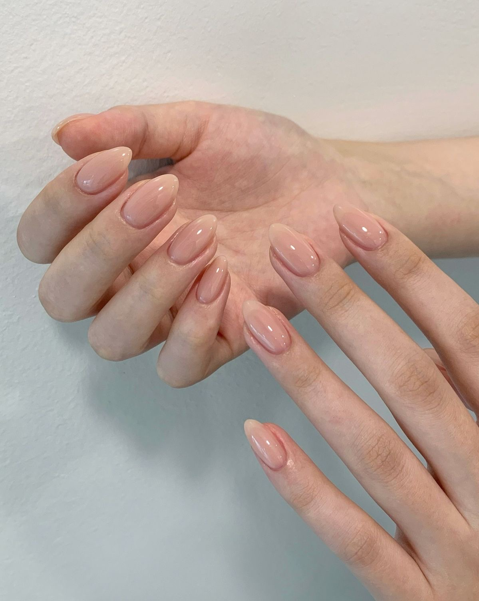
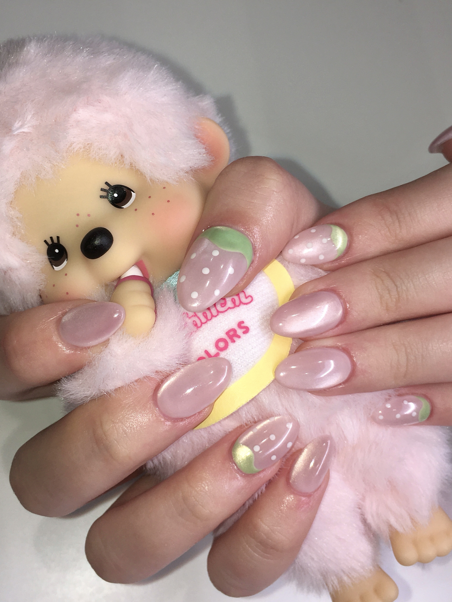
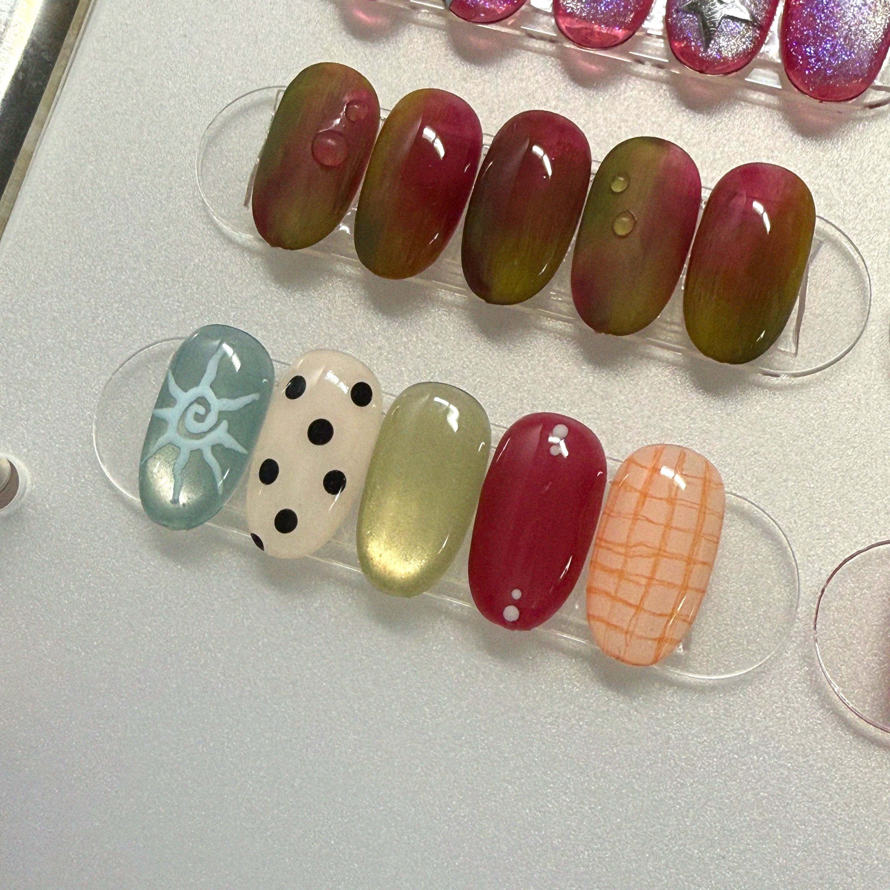

01손과 도구 준비
깨끗하고 편안한 환경 만들기
손을 깨끗이 씻고 물기를 충분히 말린 뒤, 필요한 도구를 손이 닿는 곳에 정리해요.
TIP · 환기가 잘되는 곳에서 작업하고, 제품이 피부나 눈에 닿지 않도록 주의해요.
시작하기 전에 필요한 도구를 준비하고 하나씩 체크해 보세요. 가지고 있는 제품을 먼저 확인하면 불필요한 구매를 줄일 수 있어요.
각 단계의 설명을 읽고 천천히 진행해 보세요. 제품마다 사용법이 다를 수 있으니 실제 제품의 안내 사항을 먼저 확인하는 것이 중요합니다.
손을 깨끗이 씻고 물기를 충분히 말린 뒤, 필요한 도구를 손이 닿는 곳에 정리해요.
파일을 이용해 손톱 끝을 한 방향으로 부드럽게 정리해요. 손톱 길이와 모양은 본인이 편안하게 느끼는 정도로 맞춰 주세요.
제품 설명을 확인한 뒤 베이스 코트를 얇고 고르게 발라요. 다음 단계로 넘어가기 전 제품 안내에 적힌 건조 방법을 따라 주세요.
브러시에 적당량을 묻혀 손톱 중앙에서 끝 방향으로 바르고, 양옆도 빈 곳이 없도록 정리해요. 필요하면 제품 안내에 따라 얇게 덧발라요.
탑코트는 젤램프에 60초 큐어링 해주는 게 제일 좋아요!
처음부터 복잡한 디자인을 시도하기보다 단색이나 간단한 포인트부터 시작해 보세요.

누드 네일 차분하고 깔끔한 기본 컬러 출처-핀터레스트
자석 네일 빛의 각도에 따라 다양한 분위기 표현
디자인 아트 자신이 하고싶은 디자인을 표현할 수 있는 네일서비스의 제작 과정과 AI 활용 범위를 안내합니다.
서비스명 셀프 네일 입문자를 위한 실전 가이드
제작 정다은 · 뷰티케어학과
과목 AI와 디지털 아츠
제작일 2026년 11월 27일
주제와 전체 구성은 기획자의 제안서를 바탕으로 정리했습니다. 웹페이지 코드와 일부 문장 구성에는 생성형 AI를 보조적으로 활용했으며, 최종 내용과 화면은 직접 확인하고 수정하는 것을 전제로 합니다. 별도의 외부 사진·음원은 사용하지 않았으며, 네일 예시 그래픽은 CSS와 SVG로 직접 구성했습니다.